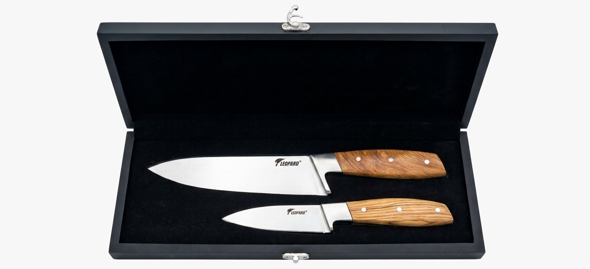

Wedding gift · Heirloom-grade
The wedding gift Pakistani couples actually use.
Flowers fade. Sweets are gone in a week. Cash gets spent on the karahi tomorrow. A premium chef knife set sits on the new couple's kitchen counter for years, used every single day. Hand-forged in Sialkot, gift-boxed, and delivered free to your wedding venue or directly to the bride and groom.

- Under PKR 7,000
- Satin-lined gift box
- Free direct delivery
- Made in Pakistan
Why this gift
Six reasons it's the right wedding gift.
Actually used, every day
Knives are the most-used tools in any Pakistani kitchen — for sabzi, gosht, salad, fruit, garnish. Your gift sits on their counter, not in a cupboard.
Heirloom, not disposable
Full-tang, high-carbon stainless steel, hand-ground. The knife you gift today is the knife they'll still use at their tenth anniversary.
Premium without breaking the bank
PKR 6,700 — under five thousand, with free delivery and gift box. Premium presentation, accessible price.
Gift-ready out of the box
Each set arrives in a satin-lined black presentation case. No extra wrapping. No assembly. Open the box and it's already a gift.
Made in Pakistan, proudly
Hand-forged at our workshop in Sialkot, the heart of Pakistan's blade-making heritage. A Pakistani gift, made by Pakistani hands.
We deliver to them, not you
Give the bride or groom's address at checkout. The set arrives directly, free, anywhere in Pakistan — no need to carry a heavy box to the wedding hall.
Two finishes — pick the one for them.
Sapphire-blue resin for a bolder, modern kitchen. Natural teak for a classic, warm one.
Order in time for the big day.
For Pakistani wedding season (October through March), we recommend ordering at least 5 to 7 business days before the wedding. Delivery windows by region:
- Sialkot, Gujrat, Gujranwala, Lahore — 1 to 2 business days
- Faisalabad, Islamabad, Rawalpindi, Sargodha — 2 to 3 business days
- Multan, Peshawar — 3 to 4 business days
- Karachi and further — 3 to 5 business days
Payment is in advance via EasyPaisa or JazzCash. Once your order is confirmed, your chef knife set is hand-packed in its black satin-lined gift box and dispatched the same day. PKR 6,700 all-in.
Wedding gift — questions
Is a chef knife a good wedding gift in Pakistan?
Yes — a chef knife set is among the most-used wedding gifts in a Pakistani household. Unlike flowers, sweets or cash, it lasts decades, sits on the counter daily and reminds the couple of you every time they cook. Premium chef knife sets are gift-boxed, beautifully presented, and signal that you put thought into the gift.
Can you ship the chef knife set directly to the bride or groom?
Yes. Add their address at checkout. We hand-pack each set in a satin-lined black gift box and ship free anywhere in Pakistan. The set arrives ready to give — no extra wrapping needed.
How early should I order before the wedding date?
We recommend at least 5 to 7 business days before the wedding. Within Punjab (Lahore, Sialkot, Gujranwala, Gujrat) deliveries arrive in 1 to 2 days; further cities (Karachi, Peshawar, Multan) take 3 to 5 days. For peak wedding season (October–March), order earlier.
Can I include a card or message?
Tell us at checkout (in the order notes) or message us on WhatsApp before we dispatch. We can include a handwritten card with a short message inside the gift box. No extra fee.
What if the couple already has a knife set?
Most Pakistani households use mismatched, low-quality kitchen knives. A premium hand-forged set is almost always an upgrade — and many couples keep their first sharp knife for years. If you really want to be sure, message us and we'll guide you on alternatives within the Chef Knife range.